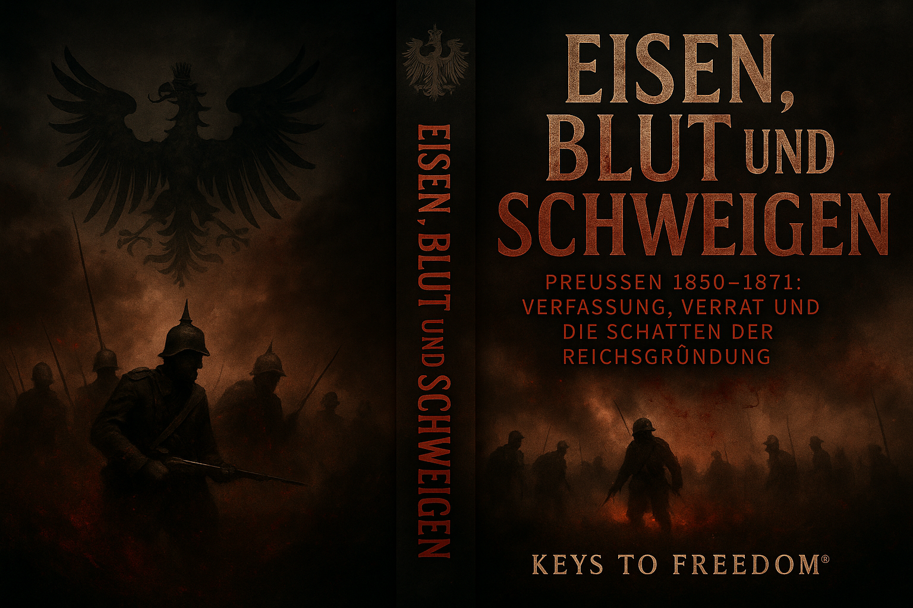

Der Kaiserliche Erlass
Hardcover, 128 Seiten
Beleuchtet die letzten Monate des Kaiserreichs 1918 und die Rolle eines kaum bekannten Erlasses, der das Ende der Monarchie beschleunigte.

Die dunkle Seite des Kaiserreiches
Hardcover, 108 Seiten
Zeigt die Schattenseiten des wilhelminischen Deutschlands: Unterdrückung, Militarismus und die Opfer einer auf Expansion ausgerichteten Politik.

Blut und Krone
Softcover, 240 Seiten
Eine kritische Analyse der Verflechtung von Adel, Krieg und Macht im Kaiserreich – und welche Spuren sie bis heute hinterlassen hat.

Eisen, Blut und Schweigen
Hardcover, 196 Seiten
Untersucht die Zeit nach Bismarcks Reichsgründung und beschreibt, wie Gewalt, Zensur und Machtkämpfe die Gesellschaft prägten.